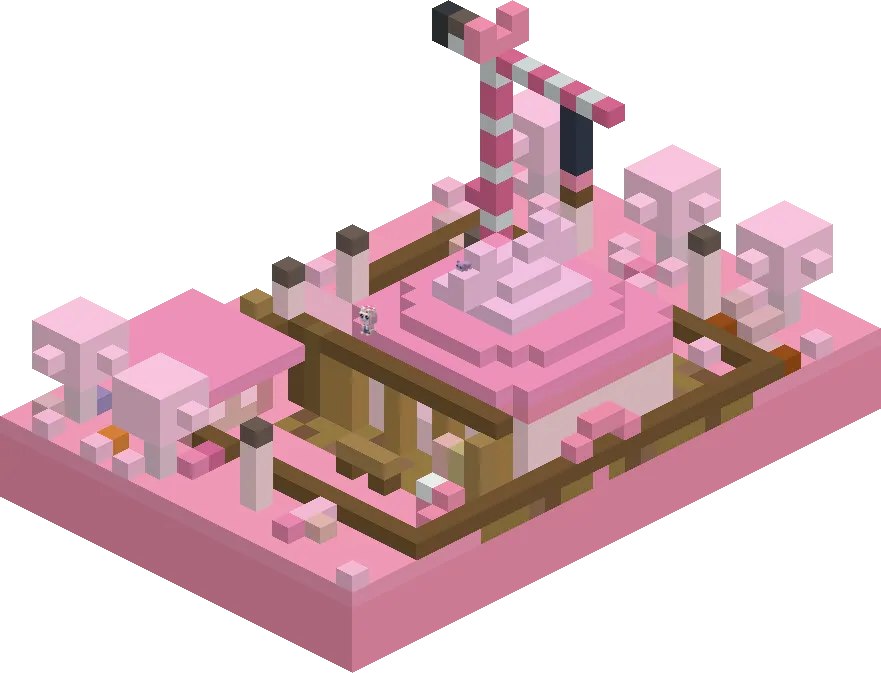
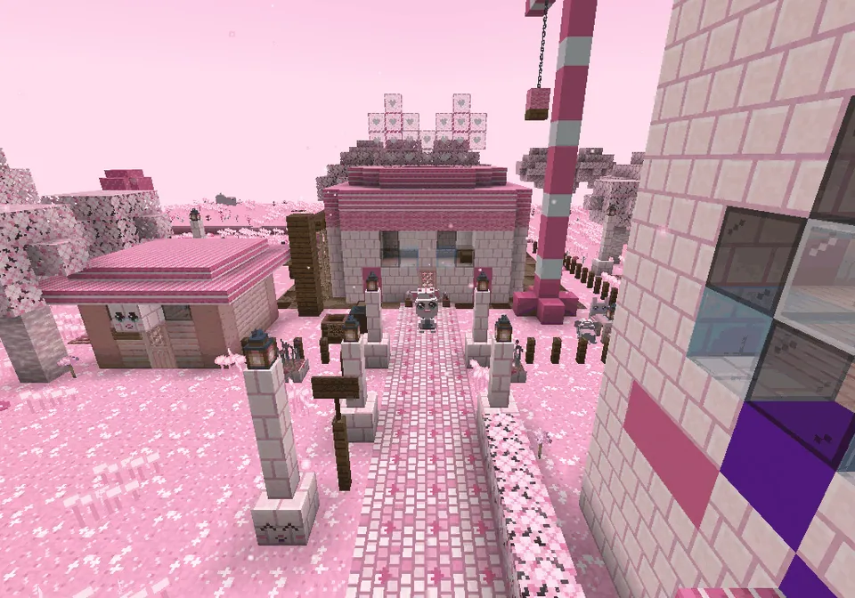
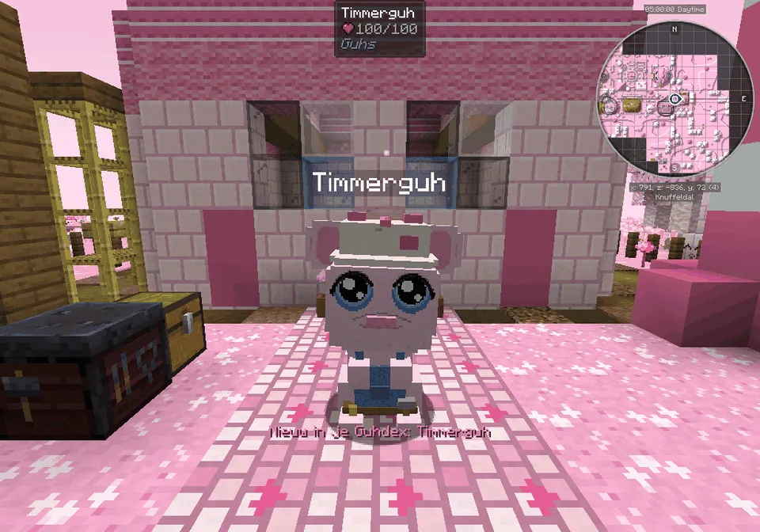
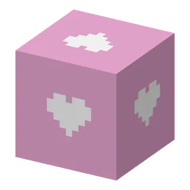
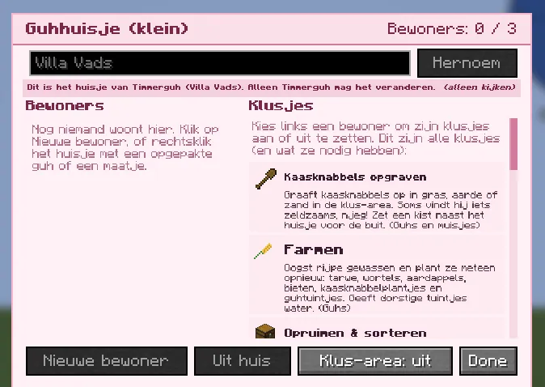

At the edge of every Knuffeldal town the Timmerguh is building a guh house. Help him and learn to build guh houses yourself.
Aan de rand van elk Knuffeldal-stadje bouwt de Timmerguh een guhhuisje. Help hem en leer zelf guhhuisjes bouwen.

The building site in every Knuffeldal townDe bouwplaats in elk Knuffeldal-stadje
At the end of the street past Cocotje's house (follow the signpost Naar de bouwplaats!) every Knuffeldal town now has a bouwplaats: a half-finished guhhuisje (a big guh head with eye windows and a mouth door), a scaffold with a ladder, a pink crane with guh ears, a site hut with the building plan, a sawhorse, stacks of planks and wool, a wheelbarrow and a lunch table. The roof and the two round ears are still see-through ghost tiles. There you meet the Timmerguh, in his crooked helmpje and tool belt, humming along with every tick of his hammer.
Aan het eind van de straat langs het huisje van Cocotje (volg het bordje Naar de bouwplaats!) heeft elk Knuffeldal-stadje nu een bouwplaats: een half afgebouwd guhhuisje (een groot guhhoofd met oogramen en een mondjesdeur), een steigertje met een ladder, een roze bouwkraan met guhoortjes, een bouwkeet met de bouwtekening, een zaagbok, stapels planken en wol, een kruiwagen en een lunchtafel. Het dak en de twee ronde oortjes zijn nog doorzichtige spookplekjes. Daar woont de Timmerguh, met zijn scheve helmpje en gereedschapsriem, die bij elke tik van zijn hamertje neuriet.
De Timmerguh: Samen een huisje bouwen

The building siteDe bouwplaats
The half-built huisje with the crane and the scaffold.Het half gebouwde huisje met de kraan en de steiger.

Talking to himMet hem praten
He talks with answer buttons, like all characters.Hij praat met antwoordknoppen, net als alle personages.

The questlineDe questline
- Say hello and pick Ik help je mee!Zeg hallo en kies Ik help je mee!
- Bring him 16 planks (any wood) and 8 pink wool.Breng hem 16 planken (elk soort hout) en 8 roze wol.
- He lends you dakpluisjes. Right-click every ghost tile of the roof and the ears (46 of them): tik, tik, pluf! The last one puts the pink flag on top (De vlag in top!) with fireworks, and you get a small huisje: ons eerste huisje.Hij leent je dakpluisjes. Rechtsklik elk spookplekje van het dak en de oortjes (46 stuks): tik, tik, pluf! De laatste zet de roze vlag in top (De vlag in top!) met vuurwerk, en je krijgt een klein huisje: ons eerste huisje.
- Let one of your guhs move into a huisje of yours.Laat een van je guhs intrekken in een huisje van jou.
- Tell the Timmerguh: you get his bouwboekje, another small huisje and the timmermanshelmpje.Vertel het de Timmerguh: je krijgt zijn bouwboekje, nog een klein huisje en het timmermanshelmpje.
- Optional: put a toy (glijbaantje, wip, schommel, tunnel or a knabbelbal) and a guhlampje in the home area of a huisje: the gereedschapsriem.Optioneel: zet een speeltje (glijbaantje, wip, schommel, tunnel of een knabbelbal) en een guhlampje in het thuisgebied van een huisje: de gereedschapsriem.
With friends: everybody who is at the roof step helps on the same roof and finishes together. When the next player brings materials to a finished roof, the Timmerguh simply starts a new one (er is meteen een guhgezinnetje ingetrokken!). Lost your bouwboekje or your first huisje? He gives you another.
Met vriendjes: iedereen die bij de dak-stap is helpt aan hetzelfde dak en is samen klaar. Brengt de volgende speler materiaal bij een af dak, dan begint de Timmerguh gewoon aan een nieuw (er is meteen een guhgezinnetje ingetrokken!). Je bouwboekje of je eerste huisje kwijt? Hij geeft je een nieuw.

Only the owner changes a huisjeAlleen de eigenaar verandert een huisje
A huisje belongs to whoever placed it. On a server, everyone may open its screen and look, but for others it says Dit is het huisje van X (alleen kijken): the name can't be edited, Hernoem, Nieuwe bewoner and Uit huis are grey (with a tooltip), and the chore switches can't be clicked. Others can't break it (it doesn't even crack), and can't put guhs or maatjes in or take them out. The owner, and an operator, can do everything.
Een huisje is van wie het neerzette. Op een server mag iedereen zijn scherm openen en kijken, maar voor anderen staat er Dit is het huisje van X (alleen kijken): de naam is niet te veranderen, Hernoem, Nieuwe bewoner en Uit huis zijn grijs (met een tooltip), en de klusjes-schakelaars zijn niet aan te klikken. Anderen kunnen het niet afbreken (er komt niet eens een barstje in), en er geen guhs of maatjes in zetten of uit halen. De eigenaar, en een operator, mag alles.
Steps (FTB quests)Stappen (FTB-quests)
The quest texts are in Dutch, like everything in the game.De questteksten zijn Nederlands, net als alles in het spel.
- De Timmerguh
Aan de rand van elk Knuffeldal-stadje (loop de straat langs het huisje van Cocotje helemaal uit: volg het bordje) ligt een bouwplaats. Daar bouwt de Timmerguh een guhhuisje: een huisje in de vorm van een guhhoofd. Zeg eens hallo!Aan de rand van elk Knuffeldal-stadje (loop de straat langs het huisje van Cocotje helemaal uit: volg het bordje) ligt een bouwplaats. Daar bouwt de Timmerguh een guhhuisje: een huisje in de vorm van een guhhoofd. Zeg eens hallo! - Planken en roze wol
De Timmerguh heeft 16 planken (van elk hout) en 8 roze wol nodig voor het oortjesdak. Breng ze naar de bouwplaats!De Timmerguh heeft 16 planken (van elk hout) en 8 roze wol nodig voor het oortjesdak. Breng ze naar de bouwplaats! - De vlag in top!
Klim de steiger op en rechtsklik elk doorzichtig plekje van het dak met een dakpluisje. Vergeet de oortjes niet! Als het laatste plekje dicht is, gaat de vlag in top.Klim de steiger op en rechtsklik elk doorzichtig plekje van het dak met een dakpluisje. Vergeet de oortjes niet! Als het laatste plekje dicht is, gaat de vlag in top. - Ons eerste huisje
Van de Timmerguh krijg je een klein Guhhuisje. Zet het neer bij je thuis en laat een van je tamme guhs erin wonen (rechtsklik het huisje: Nieuwe bewoner).Van de Timmerguh krijg je een klein Guhhuisje. Zet het neer bij je thuis en laat een van je tamme guhs erin wonen (rechtsklik het huisje: Nieuwe bewoner). - Samen een huisje bouwen
Vertel het de Timmerguh: je krijgt zijn bouwboekje! Daarmee maak je zelf alle drie de Guhhuisjes (het boekje blijft in je werkbank liggen). Plus nog een klein huisje cadeau en een timmermanshelmpje.Vertel het de Timmerguh: je krijgt zijn bouwboekje! Daarmee maak je zelf alle drie de Guhhuisjes (het boekje blijft in je werkbank liggen). Plus nog een klein huisje cadeau en een timmermanshelmpje. - Timmermanshelmpje
Een crèmekleurig helmpje met een roze kam en een hartjessticker. Houd het vast (rechtsklik ingedrukt) om het te ontgrendelen, en trek het je guh aan in de kledingkast!Een crèmekleurig helmpje met een roze kam en een hartjessticker. Houd het vast (rechtsklik ingedrukt) om het te ontgrendelen, en trek het je guh aan in de kledingkast! - Knus ingericht
Een extra klusje van de Timmerguh: zet een speeltje (glijbaantje, wip, schommel, tunnel of knabbelbal) en een guhlampje in het thuisgebied van een van je huisjes, en vertel het hem.Een extra klusje van de Timmerguh: zet een speeltje (glijbaantje, wip, schommel, tunnel of knabbelbal) en een guhlampje in het thuisgebied van een van je huisjes, en vertel het hem. - Gereedschapsriem
De gereedschapsriem van de Timmerguh zelf, met een hamertje, een gele duimstok en een spijkerzakje. Tik tik, njeg!De gereedschapsriem van de Timmerguh zelf, met een hamertje, een gele duimstok en een spijkerzakje. Tik tik, njeg!